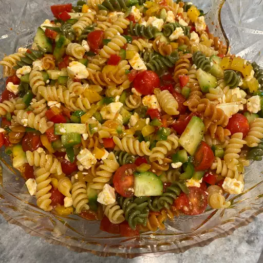

Odin Recipes
Pasta Salad

A delicious pasta salad
Description
This pasta salad recipe was given to me by a dear friend many years ago, and I've been making it ever since! It's great for barbecues.
Ingredients
Wondering what goes in pasta salad? These are the ingredients you’ll need:
- Pasta: This colorful, top-rated pasta salad starts with one pound of tri-colored spiral pasta.
- Dressing: Use a bottle of store-bought Italian-style dressing or, if you want to go the extra mile, make your own at home.
- Seasoning mix: Salad seasoning mix lends tons of savory flavor.
- Vegetables: You’ll need cherry tomatoes, three bell peppers (green, yellow, and red), and a can of black olives.
Directions
Here’s a brief overview of what you can expect when you make pasta salad at home:
- Cook and drain the pasta.
- Whisk the dressing with the seasoning mix.
- Combine the pasta with the vegetables, then toss in the seasoned dressing.